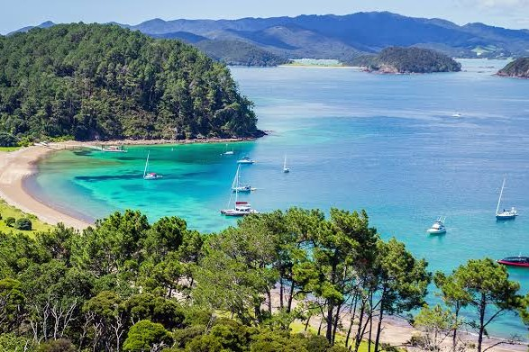
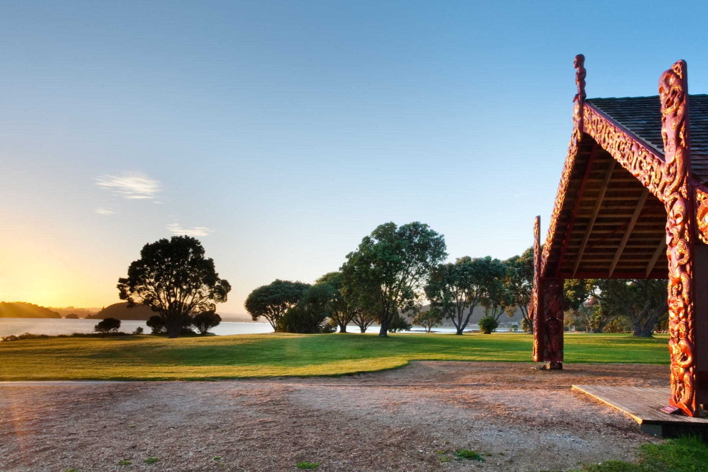

Upper North Island

Cape Reinga
Cape Reinga holds the greatest spiritual significance for Māori in New Zealand. This unique location is marked by a lone lighthouse and an old pohutukawa tree. After passing away, all Māori ghosts come to the pohutukawa tree on the headland of Te Rerenga Wairua by traveling along the coast and over the windswept view. One of Te Paki's most significant features, the Cape Reinga lighthouse is perched on the brink of a high rocky cape that is bordered to the west by the Pacific Ocean and Tasman Sea.

Bay of Islands
The Bay of Islands, which consists of 144 islands between Cape Brett and the Purerua Peninsula and contains the boutique towns of Opua, Paihia, Russell, and Kerikeri, is located three hours' drive or thirty-five minutes' flight north of Auckland. Several tour companies in the area provide fantastic flights or sea excursions to the breathtaking Cape Brett and Piercy Island's "Hole in the Rock." While a motor ferry connects Opua and Russell, a passenger ferry service operates between Paihia and Russell. On land, discover the majestic Kauri Tree in a pure subtropical rainforest or stroll along lovely river and beach paths.

Waitangi Treaty Grounds
You will be taken back to the crucial occasion in 1840 when Māori chiefs and representatives of the British Crown met to sign the Treaty of Waitangi, creating a partnership that would influence the destiny of the country, as you visit the famous Waitangi Treaty Grounds. The Waitangi Treaty Grounds guarantee an amazing experience, full of history and tales just waiting to be discovered, whether you're visiting for the first time or returning. Waitangi Treaty Grounds experiences include: entrance Hāngī & Concert Evening Experience: Savor the finest Māori culture and cuisine; on-site cafe; 2-Day pass: an inspirational and engaging day experience.